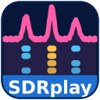
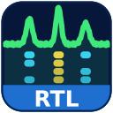

Windows installers for the SDR bridges that feed the WS suite — WS, WS-MAP and EME65 — for wide-band Q65 EME and the other digital modes. One SDR covers both halves of the station: WS takes its receive audio and rig control over TCI, while WS-MAP or EME65 takes the full wideband I/Q. Pick the bridge for your hardware. Current builds are the V3 series, served from this site — what I run here and what is in use on the air.
The suite itself lives at wsjt-x-improved.sourceforge.io — that is where most of this work went, and where to get WS, WS-MAP and EME65. See the user guide PDF for setup, per-bridge quirks, the TCI remote section, and troubleshooting.
These bridges were built first and foremost to feed WS-MAP with a full 256 kHz of bandwidth. (They also work for narrower digital modes, but the 256 kHz wideband feed is the whole point.) The bridges also deliver 3 kHz-wide SSB/USB either via VAC or TCI. V3 is a sizeable step up from the v2 series: one SDR now feeds two WS instances, there is a second receiver you can listen on, there is a sun noise meter, and the band / transverter handling was rebuilt around microwave work.
Slice 0 is the band master and the only thing that moves the SDR's LO. Slice 1 is a roamer: its own TCI server on your TCI port + 1 (40002 by default), its own dial, and it returns to the frequency it was last on. A second WS can work a different part of the same capture while the first one stays put, and slice 1 can no longer drag the LO — or the mode — out from under slice 0.
View → Receiver opens an independent receiver inside the capture you are already taking, with its own demodulator — USB, LSB, CW, AM, NFM — its own volume, and its own output device, so it can go to a different speaker from everything else. Tune it by absolute frequency in MHz. It costs no slice and no extra hardware: it is simply another channel inside the same IQ. Useful for listening to a beacon, or to the SSB calling frequency, while WS keeps decoding. In the SDRplay, HackRF RX+TX and Pluto RX+TX bridges. The RX bridges also gained a plain monitor audio output with a volume slider.
An analog-needle noise meter for antenna and system work: point at cold sky, press zero, point at the sun, and read the Y-factor off the gap. Selectable scale in dB per division, max- and min-hold, and an AGC checkbox that is there to be unticked — with AGC on, Y collapses toward 0 dB and the figure means nothing. On every bridge.
A second program port sends the same wideband IQ to a second program on the same PC, with its own bandwidth — so EME65 can have 96 kHz while WS-MAP takes the full 256 kHz, from one bridge and one SDR. Linrad bandwidth is also settable per band.
Flex Bridge — a new bridge for FlexRadio over the SmartSDR API, taking DAX IQ for the wideband feed and the radio's own DAX audio for WS, with TX and PTT. It runs alongside SmartSDR rather than instead of it, picks the radio when several are on the LAN, and on a two-SCU radio it takes two captures from one bridge — each with its own TCI and its own band — with TX arbitrated against MultiFlex peers. It also carries an Antenna Genius row and a radio panel (power, tune, antenna, meters, PG-XL / TG-XL). It is in the list above, with its own quick-start guide.
An IC-905 bridge exists as well, but is not listed yet — it is still being tested here. If you have one and want to try it, email me.
If you are coming from v1: every bridge speaks TCI, so WS drives it as a TCI transceiver over the LAN — frequency, mode, PTT and the demodulated RX audio on one WebSocket, with no virtual audio cabling, and TX audio too on the TX-capable bridges. The bridge and the SDR can live at the dish on a Raspberry Pi. v2 also added the IC-705 (WiFi) and HackRF One (RX+TX) bridges, the auto EME sub-band with dial snapping, manual entry with Lock MHz, headless start without the SDR plugged in, and the 96 / 128 / 192 / 256 kHz Linrad bandwidth selector with hot restart.
The bridges build and run on the Pi and on Debian / Ubuntu / Mint. RTL-SDR
.deb packages for amd64 and arm64 are served from this site; for the
others, email me.
A big thank-you to everyone who has tested the bridges, sent feedback, reported a bug, or asked for a feature — a great deal of what's in V3 came straight from those notes, and it's genuinely appreciated. Please keep it coming.
— 73, Andreas, N6NU
Download these rather than the older v2.1.1 releases still tagged on GitHub. Those were packaged without the Microsoft Visual C++ runtime, so on a clean Windows machine they start and close again immediately. The builds below carry the runtime inside them. (In general: if any of my installers ever flashes and vanishes, installing the Microsoft Visual C++ Redistributable cures it.)
A full station client, not an IQ feed: it talks the SmartSDR API straight over the LAN — no virtual audio cable, no sound card — and creates and manages its own slices and panadapters on the radio. Takes DAX IQ for the wideband feed and the radio's own DAX audio for WS, with TX and PTT, and runs alongside SmartSDR rather than instead of it. On a two-SCU radio it takes two captures from one bridge, each with its own band and its own TCI, with TX arbitrated against MultiFlex peers. Drives Antenna Genius port routing and a radio panel — power, tune, antenna, meters, PG-XL / TG-XL.
Latest: flex-bridge-3.1.16-setup.exe

SDRplay (RSP1A / RSPduo / RSPdx)14-bit ADC. Requires SDRplay API 3.x service installed first from sdrplay.com.

RTL-SDR (R820T2 / V3+)8-bit ADC, max 2.4 Msps. Needs WinUSB via Zadig (bundled).
Latest: rtlsdr-rx-bridge-3.1.9-setup.exe
Sound-card IQ source (any USB sound card delivering stereo IQ as audio L=I, R=Q). No special drivers — Windows audio class. For a FlexRadio use the Flex Bridge at the top of this list, which takes DAX IQ over the network instead.
Latest: iq-rx-bridge-3.1.8-setup.exe
12-bit ADC, 10 Msps native. Needs WinUSB via Zadig (bundled).
Latest: airspy-rx-bridge-3.1.9-setup.exe
8-bit ADC, 1 MHz - 6 GHz. RX-only feeder. Needs WinUSB via Zadig (bundled in installer).
Latest: hackrf-rx-bridge-3.1.8-setup.exe
Same hardware as the HackRF RX bridge but with the TX path enabled — RX and TX through WS over TCI. In WS, choose TCI as the radio and enable TCI audio. Needs WinUSB via Zadig (bundled).
Latest: hackrf-wsjtx-3.1.8-setup.exe
12-bit ADC, 70 MHz - 6 GHz. Requires Analog Devices' libiio drivers installed first.
Latest: pluto-rx-bridge-3.1.8-setup.exe
Same hardware as pluto-rx but with TX path enabled — now keys and streams TX audio over TCI. Use this if Pluto is your only radio (QO-100, indoor low-power tests).
Network-attached Icom IC-705 over WiFi/LAN — no USB cable, keeping USB hash off the receive. RX and TX through WS. In WS, choose TCI as the radio and enable TCI audio.
Latest: ic705-bridge-3.1.3-setup.exe
Enter your IC-705 Host / User / Password in Settings and click Reconnect. Earlier builds would not launch on a fresh Windows install — they tried to reach the radio before opening a window, so double-clicking appeared to do nothing. Fixed since v2.1.3.
PDF covers why the bridges exist, per-bridge setup (drivers, gains, quirks), a troubleshooting table, and a technical reference at the end — including the TCI (Thin Client Interface) section for running the bridge remotely. It still carries its original WSJT-X / QMAP file name.
WSJTX-QMAP-improved-beta-guide.pdf (latest build, served from this site)
For V3 specifically — slices, park modes, transverter offsets, the wideband feed and the sun noise meter — the shorter V3 bridge guide is the current one.
QMAP Multi-Instance Guide — run two bridges and two WS-MAP instances side by side on one computer, worked through a FlexRadio 6600 receiving H and V polarization on two DAX IQ channels. (Written when WS-MAP was still called QMAP; the procedure is unchanged.)